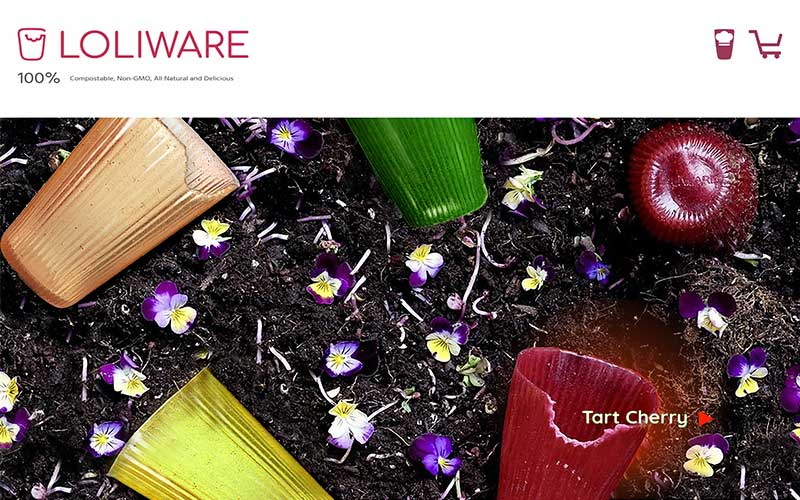
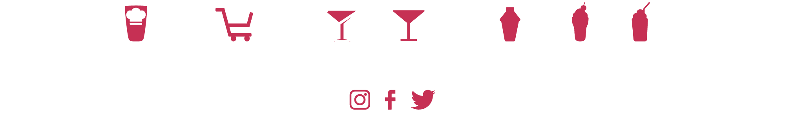
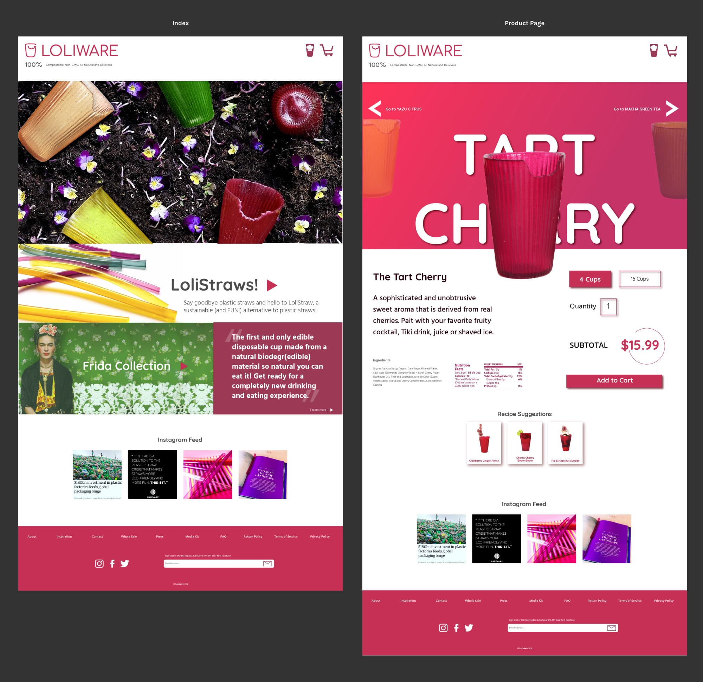
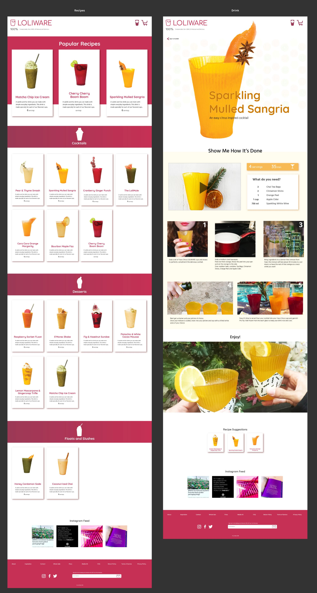
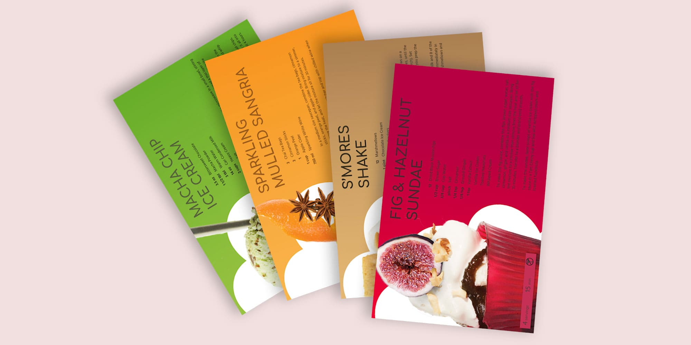
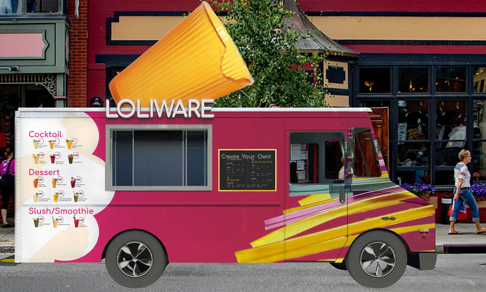

LOLIWARE - Biodegr(edible) Cups and Straws
Created by two Industrial Designers, LOLIWARE is considered “the cup of the future” because it is the first fully edible and biodegradable disposable cup and straws that are made primarily of seaweed. LOLIWARE aims to rid the world of plastic waste by replacing one-use cups and straws.
The mark is simple and bright and mimics the shape and intent of their star product, the LOLIWARE cup. Colors used across all branding and products were inspired by their current bright color palette with variations in intensity and shade.
LoliWare WebPage
Responsive Web
Currently the web presence lacks the same character as the product, so large type and bold colors are used to accent each cup in its own unique color. Product pages and recipe pages will be color coded to mimic each cup flavor.
Mobile Invision Mockup
All main e-commerce pages have been designed and put into an invision prototype so that you can get a real time feel for the LOLIWARE site.
Icon System
A small set of icons for organizing similar content and distinguishing small differences in recipes. Also cart and recipe icons for navigation.
Web Process
Site Wireframes
Wireframes were created for all main pages of the site and started as a foundation for the initial design. However, the site went through many changes and the final version of the index and product pages changed drastically.
Web Flow
Desktop Pages
The mobile and desktop sites stay relatively the same as they shrink and expand with only a few differences in stacking and arranging of content.
The main feature on Desktop is the rollover for the Header image.
 Package Design
Box
The packaging will consist of completely biodegradable materials and transform into covers or coasters for each cup. All you have to do it tear along the perforated edges, fold and stick together.
The "Party Pack" includes two of each cup flavor plus four signature LOLIWARE recipe cards.
Recipe Cards
There is an option to buy a larger set which will include a set of recipe cards. These cards will match the flavor of your cup and are a fun collectable so that you can make a signature LOLIWARE drink even when you are out of your favorite cup.
Advertise It
Food Truck
A new take on an ice cream truck is used to bring something familiar to this inventive product. All drinks, both alcoholic and non-alcoholic, desserts, and other custom treats will be served inside of LOLIWARE rather than the normal cone or single-use disposable ware you are used to.
This truck will be utilized at public events such as SXSW, food truck parks or just popping up unexpectedly outside parks or work.
\ 